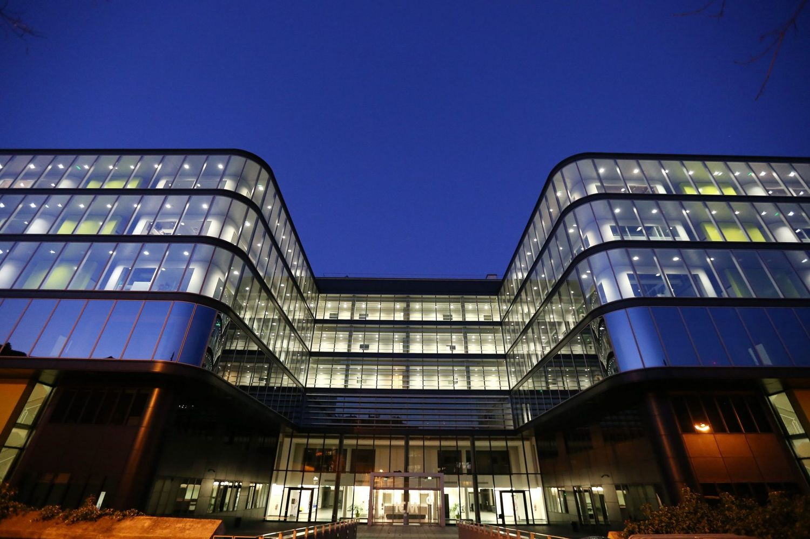
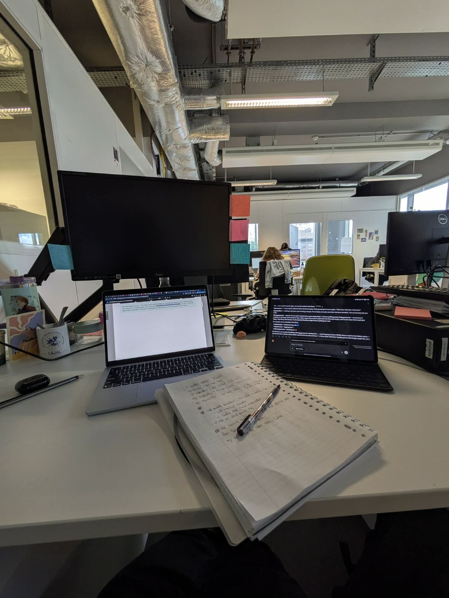
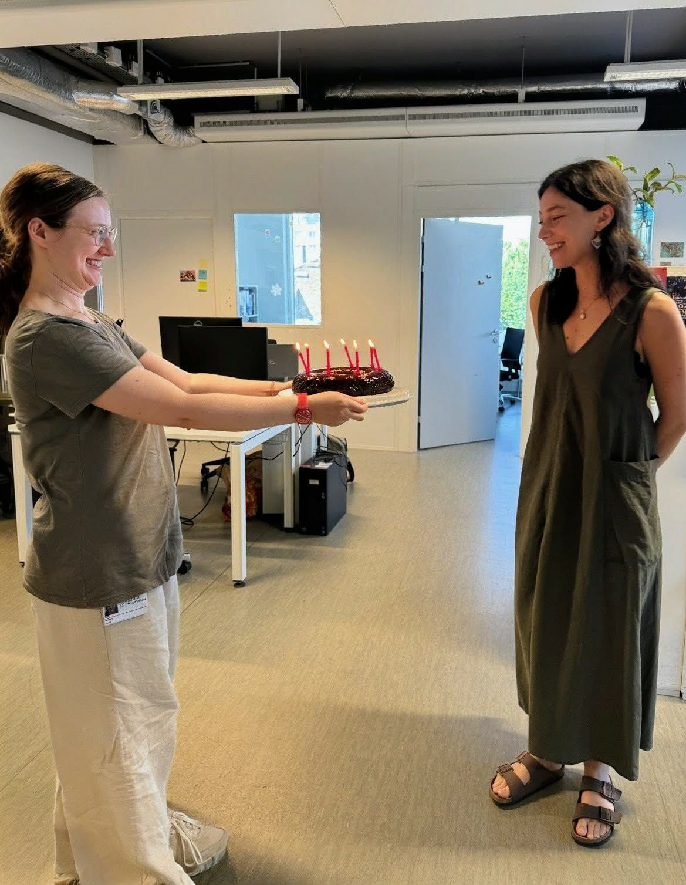
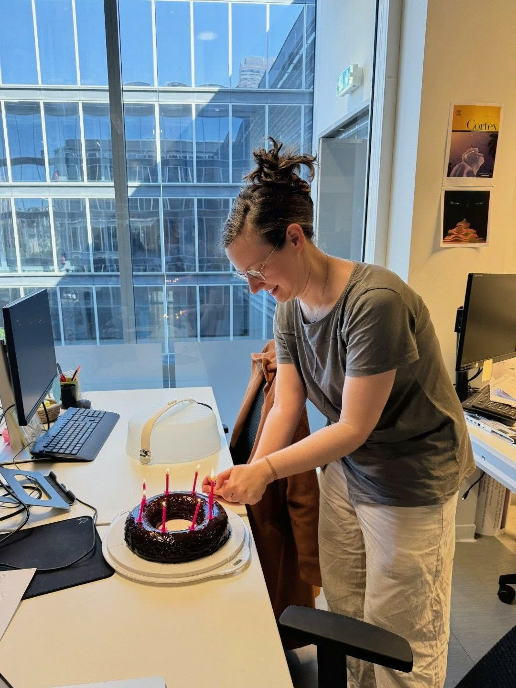
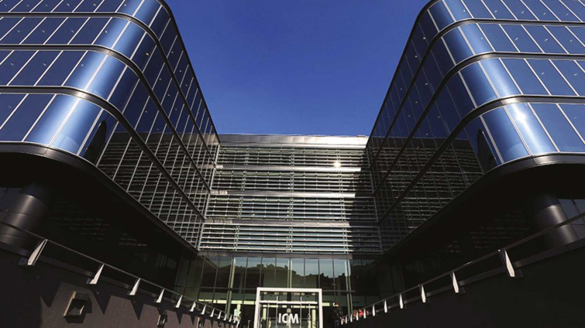
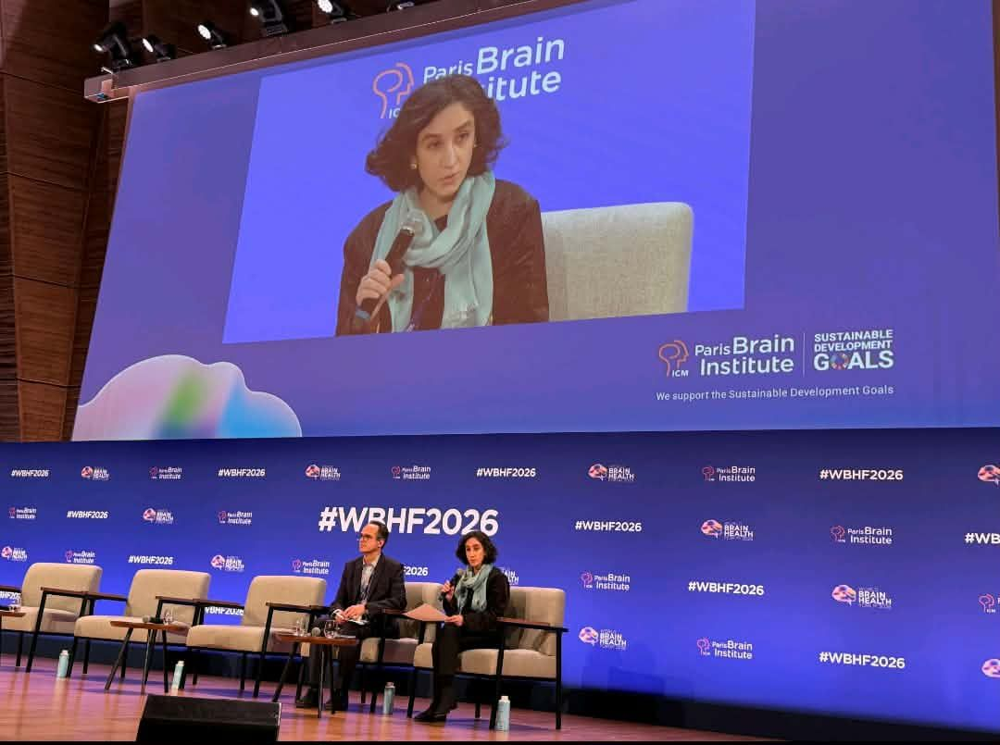
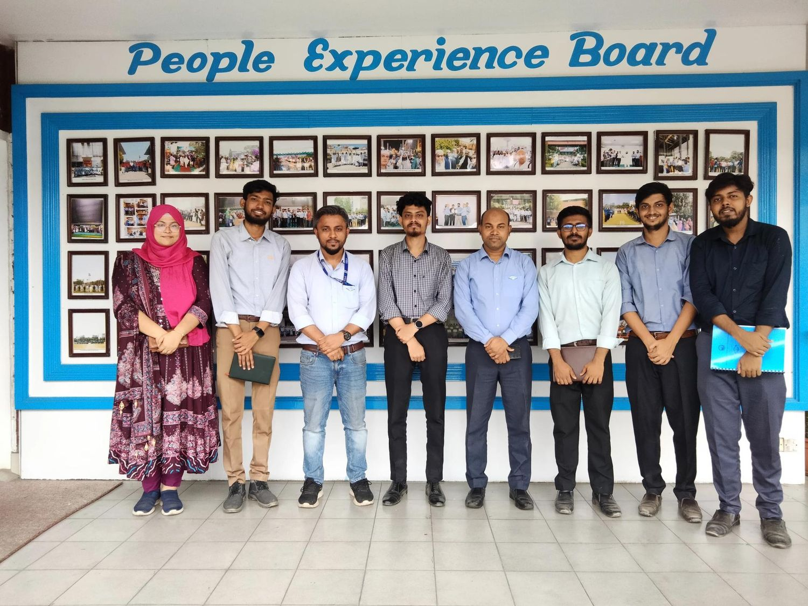
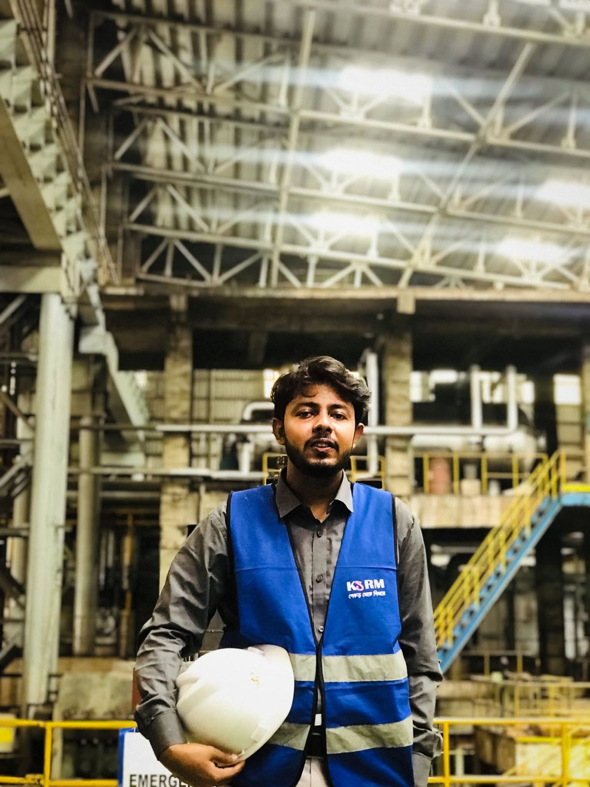
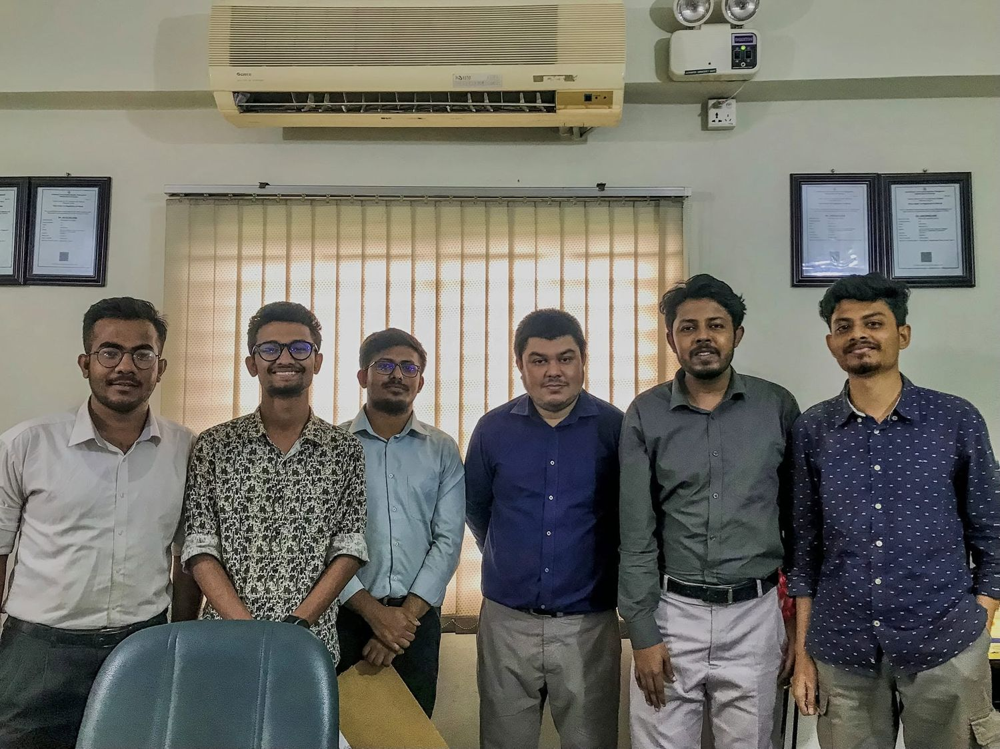
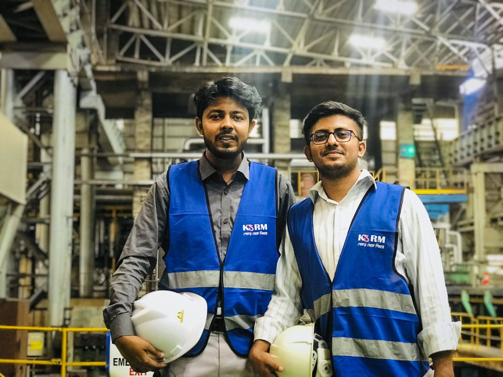

Research and industrial placements, most recent first. Each entry describes the data worked with and the methods applied to it.
Developing Gaussian hidden Markov models and quantitative analysis pipelines in Python for experimental time series data.






Hidden Markov models are a stochastic modelling technique shared with operations research, where they underpin condition monitoring and degradation modelling. The estimation problem is an optimisation problem.
Twelve-week placement across four product categories: carbonated soft drinks, bakery, snacks and dairy.

Defect reduction programme on the re-rolling process, measured over a tracked improvement cycle.



Documented end-to-end knitwear manufacturing process flow from yarn spinning through knitting, finishing and packaging, recording quality control checkpoints and production sequencing across departments.